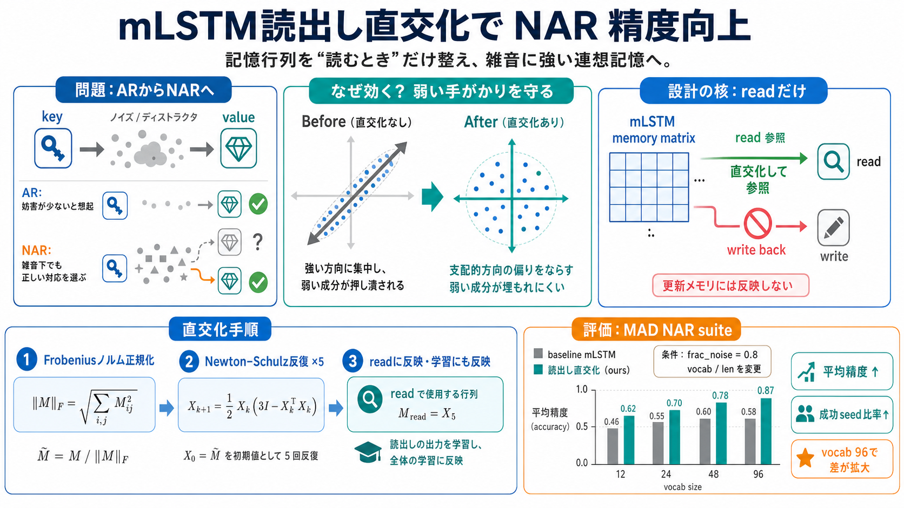

Revisiting associative recall in modern recurrent models - arXiv
In this paper, we dive deeper into one of such benchmarks: associative recall (AR), which has been shown to correlate we…

記憶行列を「読むとき」に直交化し、さらに学習にもその処理を反映させると、ノイズ付き連想記憶（NAR）が一貫して向上します。
連想記憶（Associative Recall: AR）は鍵（key）から値（value）を思い出す能力ですが、途中にディストラクタ（妨害）や雑音があると失敗しやすくなります。
記憶の表現が「強い方向」に偏ると、弱い記憶（小さな手がかり）が押し潰されます。直交化（orthogonalization）は、その偏りを抑えて読み取りを安定化する狙いです。
直交化はNewton–Schulz反復で近似し、Frobeniusノルム正規化の後に「読出しの参照」に使います。重要なのは、直交化したメモリを更新して書き戻さないことです。
直交化は、Frobeniusノルムで正規化してからNewton–Schulz反復を5回行い、計算グラフを通して学習可能にします。
評価にはMADのノイズ付き連想記憶スイートを使用し、`frac_noise=0.8`の下で、語彙サイズ（vocab）と系列長（len）を振ってベースラインmLSTMと比較します。
どの条件でも平均精度が改善し、特に語彙96の難しい領域でギャップが大きいと報告されています。成功種（seeds）の数も増え、壊滅的に近かったケースが持ち直します。
In this paper, we dive deeper into one of such benchmarks: associative recall (AR), which has been shown to correlate we…
Both sLSTM and mLSTM enhance the LSTM through exponential gating. To enable parallelization, the mLSTM abandons memory m…
In this paper, we present a comprehensive review that covers LSTM's formulation and training, relevant applications repo…
mLSTM, short for Matrix LSTM, takes a fundamentally different approach than LSTM and sLSTM by replacing the scalar memor…
This research develops and evaluates a stacked Long Short-Term Memory (LSTM) network for RUL prediction using the NASA C…
著者は、語彙96側で差が拡大することを「直交化が困難なNARでより効く」証拠と捉えています。Muonの思想（更新が支配的方向に偏るのを抑え、弱い成分を押し上げる）と整合します。
直交化したメモリを更新（書き戻し）すると性能が劣化した、という観察が重要な設計根拠になります。直交化は「学習済み表現を壊さず、読み取り方だけ整える」方向に作用している可能性があります。
Newton–Schulz反復を5回入れるためFLOPsや壁時計時間が増えます。とはいえパラメータ数は固定で追加性能が得られた、という主張があり、実用面では「増分コストに見合うか」を別途検証する必要があります。
結論として、mLSTMの読出し時に記憶行列を直交化し、その処理を学習にも反映すると、NARの平均精度と成功率が改善します。一方で、合成タスク・小規模モデルゆえ、現実の大規模ベンチマークへの一般化は未確認です。
本稿の理解に直結する周辺要素です（原典論文名は本文に明示されていないため、概念ベースで整理します）。